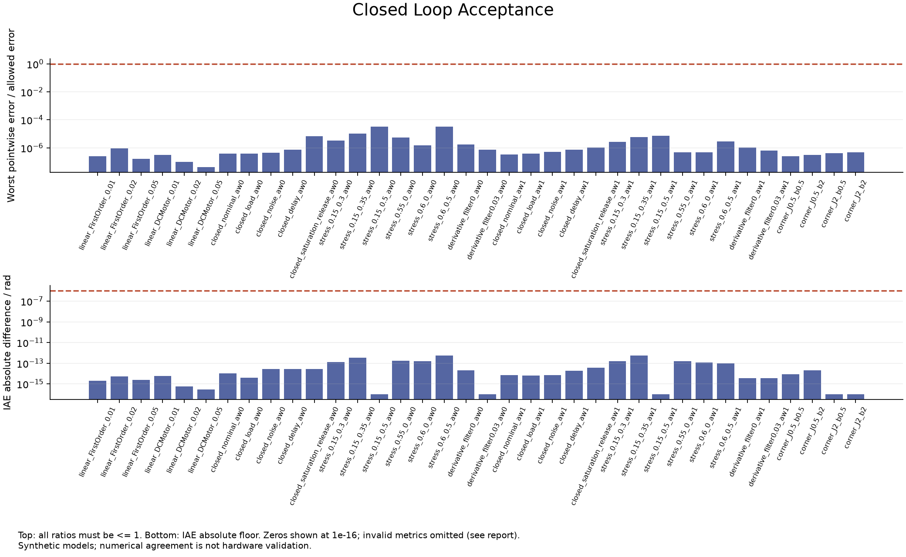
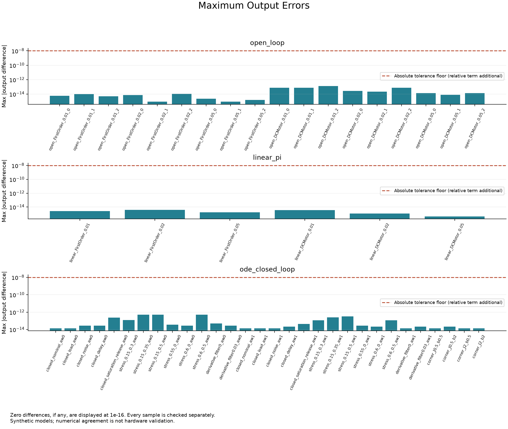
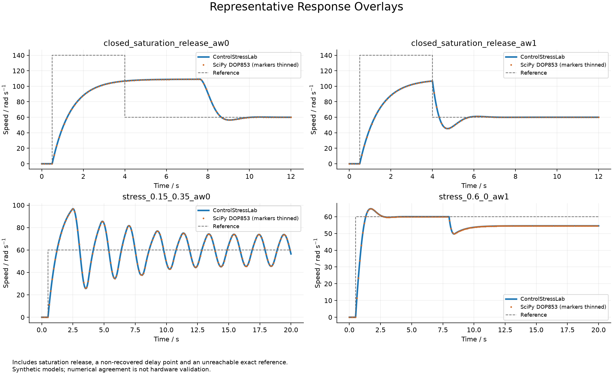
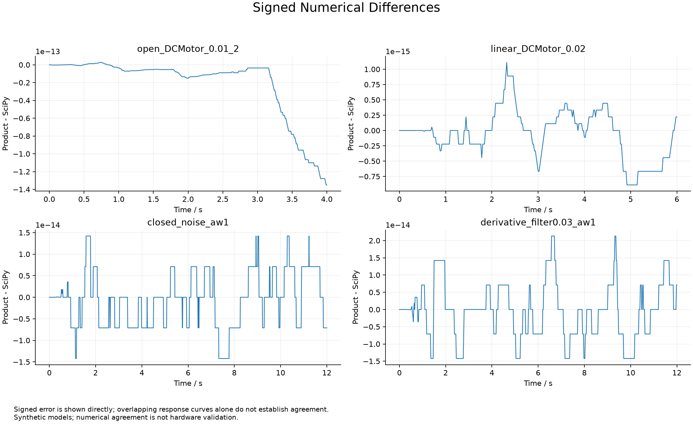

54个预定对照，失败0个。SciPy 1.9.1，参考Python 3.9.13，产品Python 3.12.14。
矩阵指数/ZOH与DOP853两种数值路径。参考脚本不导入产品、不读取产品轨迹；同一开发者实现，并非第三方审计。 全部为合成模型；通过只支持数值实现一致，不证明模型参数真实、硬件可用或闭环普遍稳定。
逐采样点容差：1e-8 + 1e-9×|参考值|；IAE容差1e-6 + 1e-9×|参考值|；恢复状态及网格时间完全一致。 这些配置不是独立随机重复，选点对照不等于复算全部既有网格。
逐项判据 · 全部输入 · 产品原始轨迹 · 参考原始轨迹 · 环境与源码指纹




| 配置 | 路径 | 判定 | 最大输出绝对差 |
|---|---|---|---|
| open_FirstOrder_0.01_0 | open_loop | PASS | 5.773e-15 |
| open_FirstOrder_0.01_1 | open_loop | PASS | 9.770e-15 |
| open_FirstOrder_0.01_2 | open_loop | PASS | 4.885e-15 |
| linear_FirstOrder_0.01 | linear_pi | PASS | 2.665e-15 |
| open_FirstOrder_0.02_0 | open_loop | PASS | 7.550e-15 |
| open_FirstOrder_0.02_1 | open_loop | PASS | 8.882e-16 |
| open_FirstOrder_0.02_2 | open_loop | PASS | 1.066e-14 |
| linear_FirstOrder_0.02 | linear_pi | PASS | 3.997e-15 |
| open_FirstOrder_0.05_0 | open_loop | PASS | 2.220e-15 |
| open_FirstOrder_0.05_1 | open_loop | PASS | 8.882e-16 |
| open_FirstOrder_0.05_2 | open_loop | PASS | 1.554e-15 |
| linear_FirstOrder_0.05 | linear_pi | PASS | 1.776e-15 |
| open_DCMotor_0.01_0 | open_loop | PASS | 7.816e-14 |
| open_DCMotor_0.01_1 | open_loop | PASS | 7.816e-14 |
| open_DCMotor_0.01_2 | open_loop | PASS | 1.350e-13 |
| linear_DCMotor_0.01 | linear_pi | PASS | 3.553e-15 |
| open_DCMotor_0.02_0 | open_loop | PASS | 2.842e-14 |
| open_DCMotor_0.02_1 | open_loop | PASS | 2.132e-14 |
| open_DCMotor_0.02_2 | open_loop | PASS | 7.461e-14 |
| linear_DCMotor_0.02 | linear_pi | PASS | 1.110e-15 |
| open_DCMotor_0.05_0 | open_loop | PASS | 1.421e-14 |
| open_DCMotor_0.05_1 | open_loop | PASS | 7.994e-15 |
| open_DCMotor_0.05_2 | open_loop | PASS | 1.421e-14 |
| linear_DCMotor_0.05 | linear_pi | PASS | 4.441e-16 |
| closed_nominal_aw0 | ode_closed_loop | PASS | 1.421e-14 |
| closed_load_aw0 | ode_closed_loop | PASS | 1.421e-14 |
| closed_noise_aw0 | ode_closed_loop | PASS | 2.842e-14 |
| closed_delay_aw0 | ode_closed_loop | PASS | 2.842e-14 |
| closed_saturation_release_aw0 | ode_closed_loop | PASS | 2.416e-13 |
| stress_0.15_0.3_aw0 | ode_closed_loop | PASS | 1.208e-13 |
| stress_0.15_0.35_aw0 | ode_closed_loop | PASS | 4.974e-13 |
| stress_0.15_0.5_aw0 | ode_closed_loop | PASS | 5.187e-13 |
| stress_0.55_0_aw0 | ode_closed_loop | PASS | 3.553e-14 |
| stress_0.6_0_aw0 | ode_closed_loop | PASS | 2.842e-14 |
| stress_0.6_0.5_aw0 | ode_closed_loop | PASS | 5.187e-13 |
| derivative_filter0_aw0 | ode_closed_loop | PASS | 4.974e-14 |
| derivative_filter0.03_aw0 | ode_closed_loop | PASS | 2.842e-14 |
| closed_nominal_aw1 | ode_closed_loop | PASS | 1.421e-14 |
| closed_load_aw1 | ode_closed_loop | PASS | 1.421e-14 |
| closed_noise_aw1 | ode_closed_loop | PASS | 1.421e-14 |
| closed_delay_aw1 | ode_closed_loop | PASS | 2.132e-14 |
| closed_saturation_release_aw1 | ode_closed_loop | PASS | 4.263e-14 |
| stress_0.15_0.3_aw1 | ode_closed_loop | PASS | 1.137e-13 |
| stress_0.15_0.35_aw1 | ode_closed_loop | PASS | 2.558e-13 |
| stress_0.15_0.5_aw1 | ode_closed_loop | PASS | 3.197e-13 |
| stress_0.55_0_aw1 | ode_closed_loop | PASS | 2.842e-14 |
| stress_0.6_0_aw1 | ode_closed_loop | PASS | 2.132e-14 |
| stress_0.6_0.5_aw1 | ode_closed_loop | PASS | 1.137e-13 |
| derivative_filter0_aw1 | ode_closed_loop | PASS | 1.421e-14 |
| derivative_filter0.03_aw1 | ode_closed_loop | PASS | 2.132e-14 |
| corner_J0.5_b0.5 | ode_closed_loop | PASS | 1.421e-14 |
| corner_J0.5_b2 | ode_closed_loop | PASS | 2.132e-14 |
| corner_J2_b0.5 | ode_closed_loop | PASS | 1.421e-14 |
| corner_J2_b2 | ode_closed_loop | PASS | 1.421e-14 |